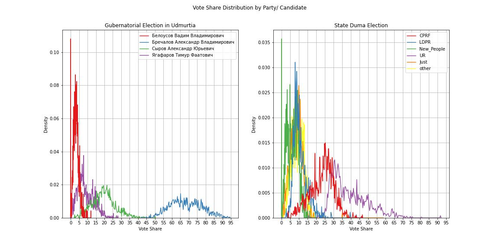
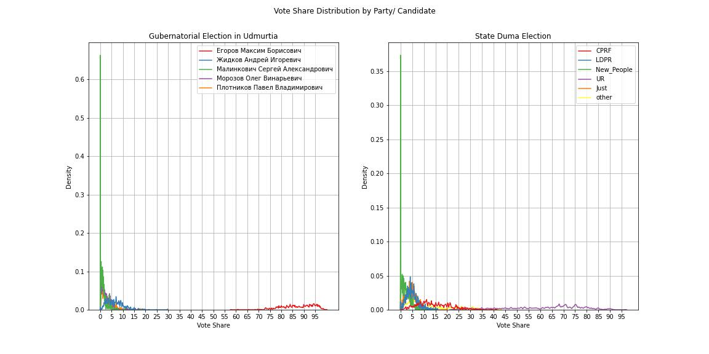

Election fraud detection in 2022 regional elections
In this short article I compare the results of 2022 Gubernatorial elections held in 14 regions of Russia and 2021 State Duma election.
Udmurtia


The gubernatorial election in Udmurtia was relatively competitive. The incumbent Aleksandr Brechalov (a member of the United Russia) won the quite challenging election campaign, with 64,37%. The second place was taken by Aleksandr Syrov - a represantative of CPRF party (19.79%). The graphs above prove the presence of election forencics in favor of the United Russia candidate at some polling stations. A small peak at 65% in the kernel density graph might be evidence of simple "drawing" the results. Besides, the high variance of votes distribution for A. Brechalov (blue curve) in contrast to the green one (A. Syrov) means that Brechalov's support in the region varies significantly over the polling stations or parts of Udmurtia. The graph on votes distribution depending on turnout reveals that usual administrative resource mobilization took place. Maybe, some other techniques were exploited to increase the number of votes given to A. Brechalov. To sum up, the election forensics were present in the recent election, but they do not seem to be ubiquitous and outrageously straghtforward, I would say, quite moderate.
Tambovskaya Oblast'
Notably outrageous election forensics took place in Tambovskaya Oblast'. M. Egorov, the United Russia candidate, received 84.95% of votes in the election, which is the highest vote share among all regions held gubernatorial elections this year. Without any comments, you can see the chaotic and unnatural curves in th graphs below, which was observed not only in the 2022 election, but in the 2021 State Duma election as well.
